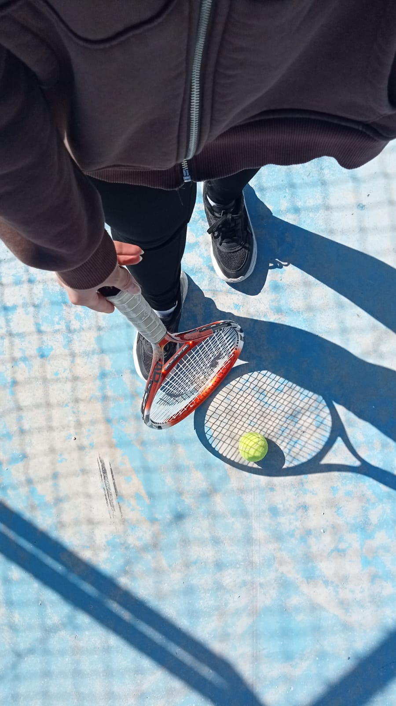
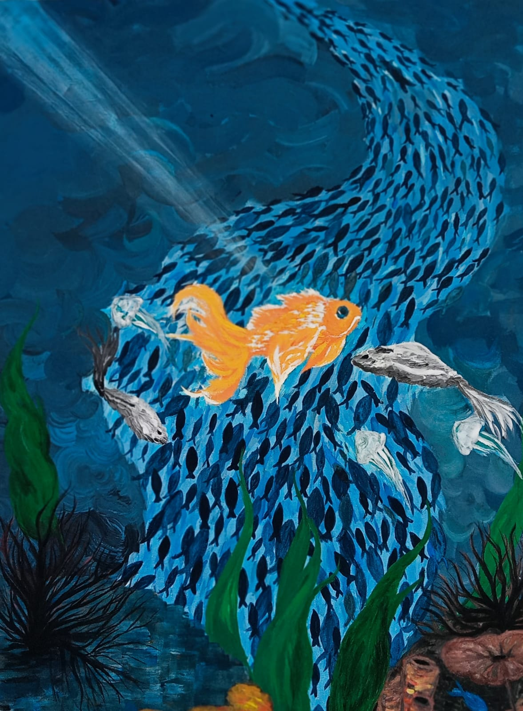

🩵 Hobilerim
🎂 Pastacılık
Pastacılık, en çok keyif aldığım ve emek verdiğim hobilerimden biri aynı zamanda sevdiklerime mutluluk katmanın bir yolu. En çok da küçük kardeşimin doğum günleri için hazırladığım pastaları yapmayı seviyorum :)

🎾 Tenis
Tenis oynamaya bayılıyorum çünkü hem eğlenceli hem de enerji verici bir spor. Son iki yıldır ders alıyorum ve bu süreçte tenis oynamanın ne kadar keyifli olduğunu keşfettim

🎨 Resim
Resim, çocukluğumdan beri en sevdiğim şeylerden biri. Elimi yüzümü boyalarla kirletmekten hep keyif aldım. Ne kadar başarılı olduğum tartışılır ama bence en güzeli tuvalin başına oturup bir fırça almakla başlıyor.
